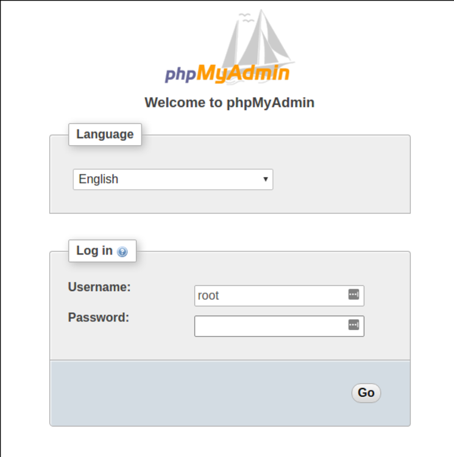
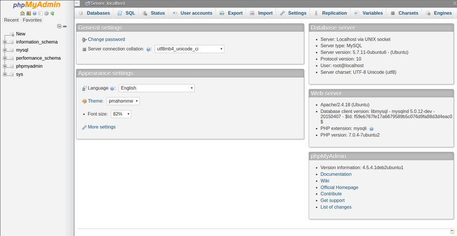

root
myu........a.
Переустановка
sudo dpkg-reconfigure phpmyadmin
Как установить и настроить phpMyAdmin в Ubuntu 16.04 PostedFebruary 26, 2017 100.8k views Applications MySQL PHP Apache Ubuntu 16.04
Несмотря на то, что многие пользователи испытывают потребность в системе управления базами данных вроде MySQL, работа с MySQL только с помощью средств командной строки может вызывать дискомфорт.
phpMyAdmin был создан для того, чтобы пользователи могли управлять базой данных MySQL с помощью веб-интерфейса. В этой статье мы расскажем о том, как установить и настроить phpMyAdmin для безопасной работы с вашими базами данных в Ubuntu 16.04.
Перед тем, как мы начнём, убедитесь, что у вас есть всё необходимое.
Прежде всего, мы будем исходить из того, что у вас есть не-рутовый (non-root) пользователь с привилегиями sudo. Настроить такую учётную запись пользователя можно следуя шагам 1-4 в статье о первичной настройке сервера на Ubuntu 16.04.
Мы также будем считать, что вы завершили настройку стека LAMP (Linux, Apache, MySQL и PHP) на вашем сервере с Ubuntu 16.04. Если вы ещё не сделали этого, вы можете ознакомиться с этим процессом в статье об установке стека LAMP на Ubuntu 16.04.
И, наконец, необходимо иметь в виду некоторые вопросы безопасности при использовании phpMyAdmin, поскольку он:
По этим причинам, а также потому, что phpMyAdmin является одним из наиболее распространённых и атакуемых PHP приложений, вам не стоит запускать phpMyAdmin на удалённых машинах с простым соединением HTTP. Если у вас ещё нет домена с настроенным SSL/TLS сертификатом, рекомендуем ознакомиться со статьёй Делаем Apache безопаснее с помощью Let' Encrypt на Ubuntu 16.04.
После выполнения описанных выше мероприятий, вы можете начать следовать шагам, указанным в этой статье.
Сначала установим phpMyAdmin из репозиториев Ubuntu по умолчанию.
Для этого обновим наш локальный индекс пакетов, а затем используем систему управления пакетами apt для загрузки и установки необходимых файлов:
В процессе установки вам будет задано несколько вопросов по конфигурации.
Внимание:
Во время первого диалога apache2 подсвечен, но не выбран. Если вы не нажмёте Пробел для выбора Apache, установщик не переместит необходимые файлы в процессе установки. Нажмите Пробел, Tab, а затем Enter для выбора Apache.
В процессе установки в директорию /etc/apache2/conf-enabled/ будет добавлен файл конфигурации phpMyAdmin для Apache.
Единственное, что мы должны сделать вручную, так это включить расширения PHP mcrypt и mbstring следующими командами:
Далее перезапустим Apache для применения изменений:
Теперь вы можете осуществить доступ к веб-интерфейсу phpMyAdmin введя имя домена или публичного IP адреса вашего сервера и строки /phpmyadmin:
https://доменное_имя_или_IP_адрес/phpmyadmin

Теперь вы можете войти в веб-интерфейс используя имя пользователя root и пароль, заданный в процессе установки MySQL.
После входа вы увидите похожий интерфейс пользователя:

Шаг 2 - Делаем phpMyAdmin безопаснее
Установка phpMyAdmin осуществляется достаточно просто. Тем не менее, мы ещё не закончили. Из-за того, что phpMyAdmin используется большим количеством пользователей, он представляет собой популярную цель для злоумышленников. Нам необходимо предпринять некоторые шаги для предотвращения неавторизованного доступа.
Одним из способов добиться этого является авторизация пользователя перед входом в само приложение. Мы можем решить эту задачу использованием возможностей входящего в Apache файла .htaccess для авторизации и аутентификации пользователей.
Настройка Apache для разрешения использования .htaccess
Сначала включим возможность использования файла .htaccess в нашем файле конфигурации Apache.
Мы будем редактировать файл в нашей конфигурационной директории Apache:
Нам необходимо добавить директиву AllowOverride All в секцию <Directory /usr/share/phpmyadmin> конфигурационного файла:
/etc/apache2/conf-available/phpmyadmin.conf
<Directory /usr/share/phpmyadmin>
Options FollowSymLinks
DirectoryIndex index.php
AllowOverride All
. . .
После того, как вы добавили эту строку, сохраните и закройте файл.
Для применения изменений перезапустите Apache:
Теперь, когда мы разрешили использовать .htaccess для нашего приложения, нам необходимо создать такой файл.
Файл необходимо создать в директории приложения. Мы можем создать необходимый файл и открыть его для редактирования следующей командой:
Теперь введём следующую информацию:
/usr/share/phpmyadmin/.htaccess
AuthType Basic
AuthName "Restricted Files"
AuthUserFile /etc/phpmyadmin/.htpasswd
Require valid-user
Введённые нами строки означают следующее:
После ввода указанных строк, сохраните и закройте файл.
Создание файла пароля .htpasswd для аутентификации
Теперь, когда мы задали путь для нашего файла пароля в директиве AuthUserFile в нашем файле .htaccess, нам необходимо создать этот файл.
Для того, чтобы это сделать, нам понадобится установить дополнительный пакет из стандартных репозиториев:
Теперь нам доступна утилита htpasswd.
Указанный нами ранее путь выглядел следующим образом: /etc/phpmyadmin/.htpasswd. Создадим этот файл и добавим в него первого пользователя следующей командой:
Вам будет предложено выбрать и подтвердить пароль для созданного пользователя. После этого файл будет создан и в него будет добавлен хэш указанного вами пароля.
Для добавления нового пользователя выполните следующую команду без флага -c:
Теперь, когда вы настроили доступ к поддиректории phpMyAdmin, при попытке входа в phpMyAdmin вам будет предложено ввести логин и пароль пользователя:
https://доменное_имя_или_IP_адрес/phpmyadmin
После ввода логина и пароля вы будете перенаправлены на страницу аутентификации phpMyAdmin. Таким образом, мы создали дополнительный слой защиты для вашего phpMyAdmin.
Теперь у вас есть phpMyAdmin, готовый к работе на вашем сервере с Ubuntu 16.04. Используя его интерфейс вы можете легко создавать базы данных, пользователей, таблицы и многое другое, а также выполнять обычные операции модификации или удаления хранимых данных.